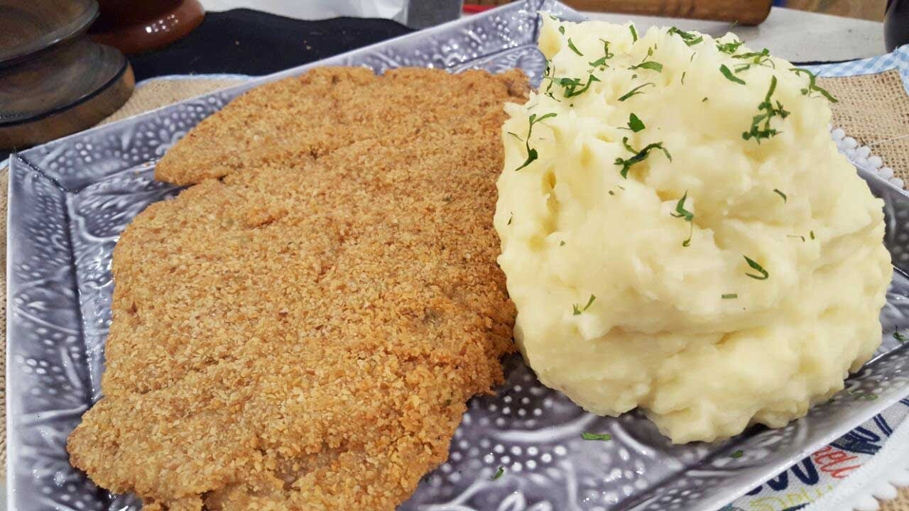

Milanesas con Puré
Pasos a seguir para preparar unas ricas milanesas de carne con puré de papas.

Ingredientes
- 1kg de carne de nalga
- 1kg de papas
- Pan rallado
- 2 Huevos
Pasos a seguir
- Filetear la carne
- Batir los huevos
- Mojar los filetes de carne en la mezcla de huevos
- Pan rallado
- 2 Huevos